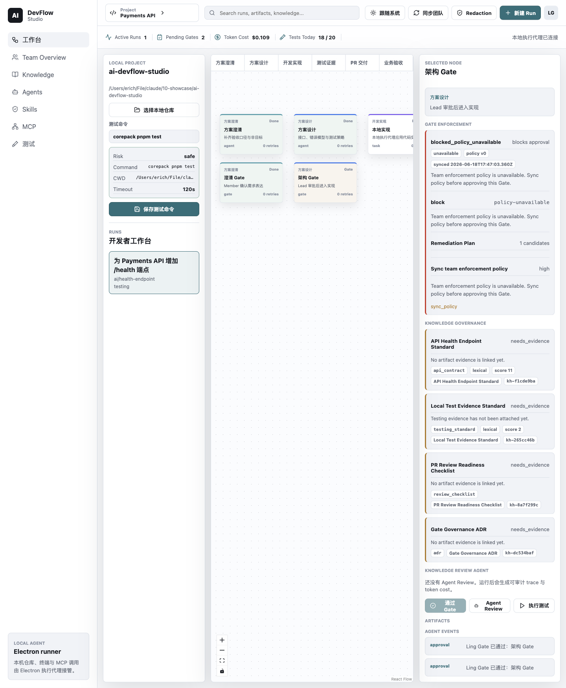

一句话如何变成工作流
从一个 Run 出发，看模糊请求怎样变成有顺序、有证据、有人工闸门的 workflow。
你点的不是聊天框，而是一条交付路线
在左侧新建一次运行，AI DevFlow Studio 会把“我想要什么”展开成一条能追踪、能暂停、也能验收的路线。先看看你熟悉的工作台，再认识路线上的四类标记。

Agent
执行工作：澄清、设计、构建或测试。
Task
把大目标切成可完成、可检查的工作单元。
Gate
让人确认方向或结果，再放行下一段路线。
Evidence
把日志、报告或补丁保存为可复查的 artifact，让“完成了”有证据。
地铁图：八站、两道闸门
一段 stage 会落成一个 node，站与站之间的 edge 决定下一站能不能到。两道 Gate 把关键方向交还给人，而最后的 Accept 让交付有明确终点。
Clarify
澄清请求
Gate
确认理解
Design
设计方案
Gate
批准方案
Build
实施改动
Test
验证结果
Draft PR
准备变更
Accept
人工验收
“有八个步骤”还不够；真正阻止 Build 绕过审批的，是连接这些步骤的方向。
代码里的站名表
系统先为当前 Run 建一张站名表。每个 property 都把业务角色和这趟 Run 的身份绑在一起，所以不同运行不会撞站。
const nodeIds = {
clarify: `${input.runId}-clarify`,
clarifyGate: `${input.runId}-clarify-gate`,
design: `${input.runId}-design`,
designGate: `${input.runId}-design-gate`,
build: `${input.runId}-build`,
test: `${input.runId}-test`,
pr: `${input.runId}-pr`,
accept: `${input.runId}-accept`,
}先建立一张叫 nodeIds 的站名表。
澄清站和第一道闸门，都带上当前 Run 的编号。
设计站和设计闸门沿用同一规则，身份清楚但角色不同。
Build、Test、PR、Accept 各自拿到唯一站名。
站名表到这里结束；后面的连接会引用这些名字。
追踪一次“Create Run”点击
desktop API 返回保存后的 Run，界面随后重新读取 persisted state。这让屏幕显示的是后台确认过的事实，不是一份乐观猜测。
if (desktopApi) {
try {
const persistedRun = await desktopApi.createRun(createInput)
const nextState = await desktopApi.loadState()
applyLocalExecutionState(nextState)
setRuns((previousRuns) =>
previousRuns.some((run) => run.id === persistedRun.id)
? previousRuns.map((run) => (run.id === persistedRun.id ? persistedRun : run))
: [persistedRun, ...previousRuns],
)
setSelectedRunId(persistedRun.id)
setSelectedNodeId(persistedRun.currentNodeId)把创建输入交给后台，等它返回真正保存好的 Run。
重新读取整份状态，并把本地执行视图更新到同一事实。
让列表聚焦新 Run，让画布聚焦它的当前节点。
把路线设计用到新问题里
下面三题不考文件名，考你会不会守住顺序、权责与保存后的事实。
1. 你要在 Design Gate 与 Build 之间加入 Security Review，而且绝不能被跳过。最稳妥的改法是什么？
2. 团队说“再加一个 AI Agent 来批准设计，就等于 Gate”。你会怎样判断？
3. 后台确认 Create Run 成功，但左侧列表仍显示旧内容。你首先会追踪哪一段？
桌面端的五位角色
一次点击要穿过清楚的 process boundary，才会变成可信的本地记录。
剧院开场：舞台看得见，权限藏在后台
点击“新建 Run”后，Renderer 用 React 画出界面，却没有资格直接碰文件和数据库。Preload 把获准的请求交给 Electron Main，每位角色只做自己那一段。
Renderer
舞台：收集点击、展示状态，不直接碰高权限资源。
Preload
舞台监督：用受控的 IPC 频道和 contextBridge 转达白名单口令。
Electron Main
后台总控：在 Node.js 权限区验证 payload，再执行真正操作。
Shared package
剧本规则：生成工作流节点与连接，不负责画界面或写数据库。
SQLite
档案室：确认写入，重启应用后仍能找回演出记录。
责任住在哪里？看文件树就够了
当功能放错层时，先按责任定位，不必在整个仓库里乱搜。舞台、桥、规则和档案各有清楚住址。
画面错了查 Renderer；桥接失败查 Preload 与 IPC；规则错了查 Shared；重启丢失则沿 Main 追到 SQLite。
听一次后台对讲：七句话创建一个 Run
点击“下一条”逐句追踪请求。注意：Renderer 从不越权，Preload 只转发 命名频道，而 SQLite 的确认发生在结果返回之前。
Preload：只接通批准过的分机
这份 desktop API 把每项能力映射到一个 IPC 频道；invoke 就像拨通指定分机并等一个答复。列表很窄，是刻意设计的安全边界。
const desktopApi: DevFlowDesktopApi = {
platform: process.platform,
loadState: () => ipcRenderer.invoke(ipcChannels.loadState),
loadDesktopPairing: () => ipcRenderer.invoke(ipcChannels.loadDesktopPairing),
pairDesktop: (input) => ipcRenderer.invoke(ipcChannels.pairDesktop, input),
loadRemoteSnapshot: (input) => ipcRenderer.invoke(ipcChannels.loadRemoteSnapshot, input),
listWorkRequests: (input) => ipcRenderer.invoke(ipcChannels.listWorkRequests, input),
materializeWorkRequest: (input) =>
ipcRenderer.invoke(ipcChannels.materializeWorkRequest, input),先声明一份明确类型的桌面服务菜单。
平台信息可以读取；状态和配对信息各走自己的分机。
配对与远程快照会携带输入，但仍只能拨预先命名的频道。
工作请求的读取与落地也各有单独入口。
没有出现在菜单里的后台能力，Renderer 就拿不到。
contextBridge.exposeInMainWorld('aiDevFlowDesktop', desktopApi)
桥只把 desktopApi 这一小份菜单挂到页面世界；不是把整个后台控制台递给舞台。
点击角色，定位一次 Create Run
这张图把权限方向和真实调用放在一起：先点任一角色看职责，再读 Main 的 handler。Main 不是简单转发员，它验证输入、调用共享规则，并等待档案室写入。
可见舞台 · 低权限
窄桥 · 白名单
后台 · 高权限与领域规则
ipcMain.handle(ipcChannels.createRun, async (_, payload: unknown) => {
const input = parseCreateRunInput(payload)
const created = createWorkflowRunFromRequest({
...input,
runId: `run-${randomUUID()}`,
now: new Date().toISOString(),
})
const store = await getStore()
const result = await store.createWorkflow({
run: created.run,createRun 分机接到一份来源未知的数据，先交给解析器验证。
共享工作流规则用验证后的输入创建 Run，并补上唯一编号和当前时间。
Main 获取档案室连接，然后等待工作流真正写入。
只有保存动作返回后，确认过的结果才适合送回 Renderer。
把边界判断用到新功能与故障里
三题分别考权限放置、持久化排错和桥接面的取舍。选择你会真正交给团队执行的方案。
1. 你要新增“读取本地 Git 状态”功能，能力应该怎样穿过边界？
2. 界面提示 Create Run 成功，但应用重启后什么都没有。你首先检查哪里？
3. 有人建议把整个 ipcRenderer 暴露给页面，省得以后逐项加接口。这个取舍的问题是什么？
数据的两条旅程
原件留在本地，安全摘要可靠地抵达团队。
先过海关，再去团队
把 local-first（本地优先）想成机场海关：行李原件不必交出去，跨境的是检查后的申报单。桌面端保管 authoritative copy（权威副本），团队端只接收适合协作的版本。
本地行李库 · SQLite
raw evidence（原始证据）、完整工具结果和错误细节留在机器上。
团队申报单 · 安全摘要
先做 redaction（脱敏），把 secret（秘密值）替换成可识别但不可还原的标记。
切换视角：谁能看到什么？
同一个 Run 可以有两种视图，但不是两份地位相同的原件。点击两层，检查哪些信息能跨过信任边界。
本地视图为调查保真；团队视图为协作最小化暴露。
脱敏不是“删掉整段”，而是留下路标
这个 loop（循环）逐个拿出标签和 pattern（匹配模式）。命中时，callback function（回调函数）既记账，也返回统一标记。
for (const { label, pattern } of secretPatterns) {
value = value.replace(pattern, () => {
matches.push(label)
replacementCount += 1
return `[REDACTED:${label}]`
})逐个取出一类秘密的名称，以及识别它的规则。
找到匹配内容时，让替换回调接手处理。
记下命中了哪类秘密，并把替换次数加一。
用统一的 [REDACTED:类别] 路标代替原值，然后结束这次回调。
点“下一步”，跟着摘要走完全程
durable outbox（持久待发箱）把“准备发送”和“真的送达”拆开。API 接收摘要，团队侧的 Postgres 再把它变成 Web 视图。
待发箱的超能力：安全地再试一次
idempotency key（幂等键）让“响应丢了”不等于“再创建一份”。状态、代次、尝试次数和下次时间，则让恢复过程可以检查，而不是靠猜。
return {
id: input.id,
...metadata,
idempotencyKey: createRemoteSyncIdempotencyKey(metadata),
status: 'pending',
generation: 1,
attemptCount: 0,
nextAttemptAt: input.createdAt,创建待发记录，并沿用这次操作原本的标识。
复制同步上下文，再从它生成稳定的防重键。
记录从 pending、第一代开始。
目前尝试零次，最早可以从创建时刻开始发送。
Retryable（可重试）
网络超时或服务繁忙：保留同一操作，增加尝试次数后再发。
Recovery（恢复确认）
请求已被接收但响应丢失：用同一幂等键重放，远端识别为同一次操作。
Terminal（终止性失败）
数据合同无效或权限被拒：停止自动重试，留下明确原因等待修正。
轮到你给同步链路做判断
下面没有文件名背诵题。请选择在新情境下最能保护本地权威、又能可靠协作的做法。
1. 一段原始测试日志含有访问 token，团队需要知道测试为何失败。什么可以同步？
2. API 已接收请求，但网络在响应返回前断开。为什么下一次发送必须沿用幂等键？
3. 本地 Run 明明存在，团队 Web 却仍是旧状态。最有效的排查顺序是什么？
给 Agent 装上护栏
能力不是通行证；可靠执行来自可核对的任务合同。
登山队不会只拿一句“注意安全”就出发
把 Agent runtime（Agent 运行时）想成登山队的出发许可：路线、证件、补给、工具票和检查点缺一不可。“会爬山”只说明有能力，不说明任何路线都获准进入。
Scope（范围）
指定路线边界：这次任务可以触及哪些 Run、Node 和工作区。
Authority（权限依据）
证件绑定精确 Run、Node 和策略 version（版本），便于逐项核对。
Bounds（硬边界）
氧气、时间、步数和成本都有上限，耗尽就停。
Capability Grant（能力授权）
需要工具时才签发短时 permission（许可），而不是发一张万能钥匙。
Checkpoint（检查点）
按站回报状态与证据，失败时从已知位置恢复。
这不是建议清单，而是八个硬停止器
每个字段都回答同一个问题：远征怎样在失控前被强制停下？就算还有 token（模型处理额度），其他任何边界先到也必须停止。
export type AgentRuntimeBounds = {
maxSteps: number
maxWallTimeMs: number
maxToolCalls: number
maxToolResultBytes: number
maxTrajectoryMetadataBytes: number
maxCheckpointBytes: number
maxTokens: number
maxCostUsd: number
}导出一份运行边界合同，下面八项都能独立叫停任务。
maxSteps：执行步骤不能无限增长。
maxWallTimeMs：真实经过的 wall time（钟表时间）到点即停。
maxToolCalls：工具调用次数有封顶。
maxToolResultBytes：单次运行接收的工具结果总量不能膨胀。
maxTrajectoryMetadataBytes：描述执行轨迹的 trajectory metadata（轨迹元数据）也有体积上限。
maxCheckpointBytes：恢复快照不能无限变大。
maxTokens：模型处理额度耗尽时停止。
maxCostUsd：达到美元成本预算时停止，然后结束这份合同。
把四道护栏拖到它负责的岗位
预算、路线、证件和工具票各解决不同风险。拖动四个概念，看看你能否把“安全一点”拆成可实现的合同条款。
定义允许进入的路线与资源边界
绑定精确 Run、Node 与策略版本，供系统核验
限制步数、时间、工具调用、数据量与成本预算
为特定工具和资源签发短时许可
并行可以快，但任务图仍然有围栏
Supervisor（监督者）最多并行安排两个只读 specialist（专家 Agent），再把证据交给一个受限实施者。delegation depth（委派深度）固定为 1，工作再大也不能递归扩队。
1 · Dispatch
2 · Parallel Read
3 · Bounded Change
4 · Verify
read
两位调查专家只读证据
managed workspace edit
只有受限实施者可在受管工作区修改
saved test
检查点保存可复查的测试证据
deterministic evaluation
同样输入得到可重复的放行判断
maxSpecialists: 3,
最多三位专家
maxParallelSpecialists: 2,
同时最多两位
maxDelegationDepth: 1,
只允许一层委派
maxSpecialistRetries: 1,
每位专家最多重试一次
工具票有指纹、有目标，也会过期
授权记录用 digest（请求摘要指纹）绑定原请求，再锁定资源种类与资源标识。短时票据只能被消费、拒绝、过期或取消，不会悄悄升级成永久权限。
requestDigest
核对工具请求是否仍是获准的那一份
resourceKind
限定资源类别
resourceId
限定精确资源
expiresAt
到时即失效，不靠 Agent 自觉归还
主路径 · active → consumed
票据有效时执行获准动作；结算后变成已消费，不能重复扩大使用。
时间分支 · expired
等待许可过久，票据到期；运行留下停止原因，而不是偷偷继续。
拒绝分支 · denied / cancelled
deny-by-default（默认拒绝），没有有效票据就不调用工具。
Scope 不匹配
目标在路线之外：停止，并报告越界资源。
Grant 无效
授权被拒、过期或取消：停止，并记录票据状态。
Bounds 耗尽
任一资源预算触顶：停止，并保存最后检查点。
Evaluation 未通过
证据不满足确定性检查：停止或恢复，不宣称完成。
把“安全一点”改写成可执行决定
每道题都故意保留一些预算或能力作为诱饵。真正的判断顺序是：范围与权限先成立，运行才有资格继续消耗预算。
1. Agent 还有一半 token 预算，但一次工具调用指向合同之外的另一个工作区。应该怎么做？
2. 一位只读 Specialist 等待写工具许可时超时，但它确信修改很小。最可靠的处理是什么？
3. 因为工作量很大，AI 建议让 Specialist 再创建自己的 Specialist 树。该怎样回应？
为什么 Gate 不肯放行
一条 fail-closed 的 state transition，只会被当前、匹配且完整的证据打开。
一张“像登机牌的纸”，还不是登机牌
AI 说“测试通过了”只是口头声明。系统要的是可核对的 Test Evidence：它必须属于当前 Run、当前 Project 和当前 Node。
Claim · “通过了”
一句话没有身份、时间或可追溯结果，Gate 无法验证它。
Scope · 对上号
Evidence scope 必须与眼前这次旅程完全一致。
Result · 最新且终结
Terminal status、latest test 和报告 artifact 缺一不可。
一条 command，要连续通过五道闸
每道闸都能返回一个 blocker。系统不会跳过前一道失败，替你猜后面也许没问题。
Base blockers
Current-node invariant
Evidence scope
Evidence status
Next-node invariant
它在保护一次状态改变：任何一道印章不匹配，就保持原状态并交回可行动的 blocker。
源码先做通用检查，再问当前节点
这个 function 有两层短路：通用 blocker 先裁决，当前节点 invariant 再裁决。
export function evaluateWorkflowCommand(input: EvaluateWorkflowCommandInput): WorkflowCommandDecision {
const command = input.command
const blockers = baseBlockers(input.run, command)
if (blockers.length > 0) {
return { allowed: false, blockers }
}
const node = input.run.nodes.find((candidate) => candidate.id === command.nodeId)!
const invariantBlocker = evaluateCurrentNodeInvariant(input.run, node)
if (invariantBlocker) {
return { allowed: false, blockers: [invariantBlocker] }
}建立一个专门评估工作流命令的入口。
拿出命令，并收集对所有命令都适用的基础阻断原因。
只要这个 array 不为空，就立刻拒绝并原样交回原因。
只有基础检查通过，才寻找命令指向的当前节点。
接着评估这个节点自身必须满足的规则。
发现节点规则不成立，同样立刻拒绝；一个 blocker 就足够关门。
点击六枚印章，检查证据能否登机
这里没有编造代码 bug；每张卡都对应源码实际核对的身份、状态或附件条件。点击卡片，看它回答“这份证据究竟属于谁、现在算不算数”。
Identity seals
Freshness & attachment seals
“最新”压过“曾经”，通过也必须带回执
Gate 判断的是此刻可证明的事实，不是历史最佳成绩。修复方向也写在 blocker 里：补当前证据、让最新测试通过、把匹配报告挂回当前节点。
test_evidence_missing
没有当前测试节点的证据。恢复动作是运行并保存这次测试，而不是引用一段聊天记录。
latest_test_not_passed
最新匹配测试不是 passed。先修复并重新测试，不能用更旧的成功结果顶替。
test_report_missing
最新通过测试缺少匹配报告。生成并附加同 Run、同 Node 的 test report artifact。
别让 AI “绕过 Gate”；让它读取 blocker，并指出哪个身份、时效或附件 invariant 尚未成立。
应用题：你会怎样让 Gate 安全放行？
每题都在考恢复路径：找出当前证据链断在哪里，再补上它，而不是关闭检查。
较早一次测试 passed，但最新一次匹配测试 failed。你会怎么做？
一份 Test Evidence 是 passed，但属于另一个 Run。正确恢复方式是什么？
最新测试 passed，但匹配的报告 artifact 不在当前节点附件中。下一步是？
一枚可信 Draft PR 的诞生
从本地改动到 GitHub 回执，delivery intent 把每一枚指纹锁成同一个包裹。
像防拆封快递一样，九站都要核对封条
“代码写完了”只代表包裹开始装箱。系统还要证明：被复测、被批准、被扫描并最终送达的，始终是同一份内容。
managed worktree
重新测试
commit SHA + diff + digest 封存
Web approval
outbound scan
short-lived credential
发布 branch
创建并验证 Draft PR
接受回执
Managed worktree 隔离文件与分支，但不是 security sandbox；危险代码仍需要真正的权限与执行隔离。
五类内容指纹，把“批准的那份”钉死
字段不是行政表格，而是防拆封条。idempotency key 还让重复请求不会意外生产第二份交付。
expectedCommitSha
代码封条：发布时的提交必须仍是批准时预期的那个 commit。
diffSourceDigest
差异封条：审阅过的 diff 内容不能在批准后被偷换。
testEvidenceDigest
测试封条：通过的测试证据必须对应即将发布的那份代码。
prPackageDigest
PR package 封条：标题与说明也属于被批准内容。
intentDigest
总封条：把仓库、分支、commit、diff、测试与 PR package 汇成一个意图指纹。
idempotencyKey
投递编号：同一交付即使网络重试，也应被识别为同一件包裹。
一次性钥匙，也只能开指定仓库的指定门
短时凭据不是“有 GitHub 权限就行”。它的 authority 必须同时匹配仓库 ID、仓库名、交付分支与预期 commit。
async (credential) => {
if (
credential.repositoryId !== source.repositoryId ||
credential.repository !== source.repository ||
credential.headBranch !== source.headBranch ||
credential.expectedCommitSha !== source.expectedCommitSha
) {
throw new Error('Credential authority mismatch')拿到刚刚签发的短时凭据，准备执行受控发布。
先做四项一致性检查；其中任何一项不同都算不匹配。
Repository ID 与仓库名称必须都是被批准的目标。
凭据允许的 head branch 必须正是这次交付的分支。
凭据绑定的 expected commit 也必须与封存意图一致。
只要一枚印章不同，就抛出明确错误；不会拿“差不多”的权限继续写远端。
点击生命周期：成功是窄路，恢复是显式分支
发布是一台可观察的 state machine。遇到 stale intent 或权限错配，流程进入 recovery，不会偷偷重试写操作。
Approved path
approval_required
approved
publishing_branch
branch_published
creating_pr
completed
Explicit recovery branch
recovery_required
GitHub 回一句“成功”还不够：回执也要验真
系统把提供方返回的仓库、base、head、实际 head SHA 与 draft 状态重新对回批准意图。任何一项不同，都拒绝把这次交付记为完成。
if (
repository !== input.intent.repository ||
baseBranch !== input.intent.baseBranch ||
headBranch !== input.intent.headBranch ||
headSha !== input.intent.expectedCommitSha ||
input.draft !== true
) {
throw new Error('GitHub Delivery completion does not match the approved intent')
}收到 GitHub 结果后，开始逐项对回批准内容。
仓库、base branch 和 head branch 必须完全一致。
实际 head SHA 必须就是意图里的 expected commit SHA。
返回对象还必须明确是 draft；普通 PR 不是可接受的近似值。
任何差异都会变成错误，阻止系统错误宣告“交付完成”。
现在，把整套系统重新拼回一张地图
UI
Electron Main
Shared contracts
SQLite / outbox
API / Postgres / Web
GitHub
终局应用题：安全交付时，你会怎么选？
危险写操作没有“先发了再说”。正确答案总是维护同一份证据链，拒绝不符回执，并在不确定时进入恢复。
测试通过并获批后，workspace commit 在发布前发生变化。你会怎么做？
提供方返回仓库和 head SHA 都正确，但创建的是普通 PR。系统应当？
Outbound secret scan 无法完成，但发布时间很紧。正确动作是？
读状态
先问流程当前在哪个 lifecycle state，为什么没有进入下一步。
核指纹
让 AI 对比 commit、diff、test、PR package 与 intent digest，指出哪枚封条变化。
走恢复
对 stale intent 或 authority mismatch 明确 Resume；不要让危险写操作盲目重试。